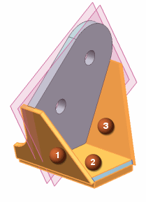
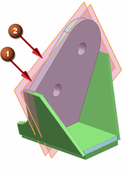
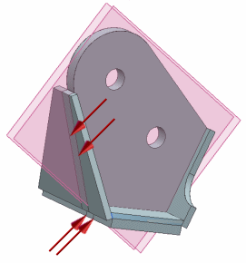

Split the bodies
Use the datum planes to split the bodies before meshing. Turn on the Keep Imprinted Edges setting to automatically generate mesh mating conditions in Advanced Simulation.
 Split Body (Feature group)
Split Body (Feature group)
-
Settings
-
 Keep Imprinted Edges
Keep Imprinted Edges -



-
 Face or Plane (Select Face or Plane)
Face or Plane (Select Face or Plane)
-

-
Apply
-
The bodies are split along the datum planes.

Leave the Split Body dialog box open for the next step.